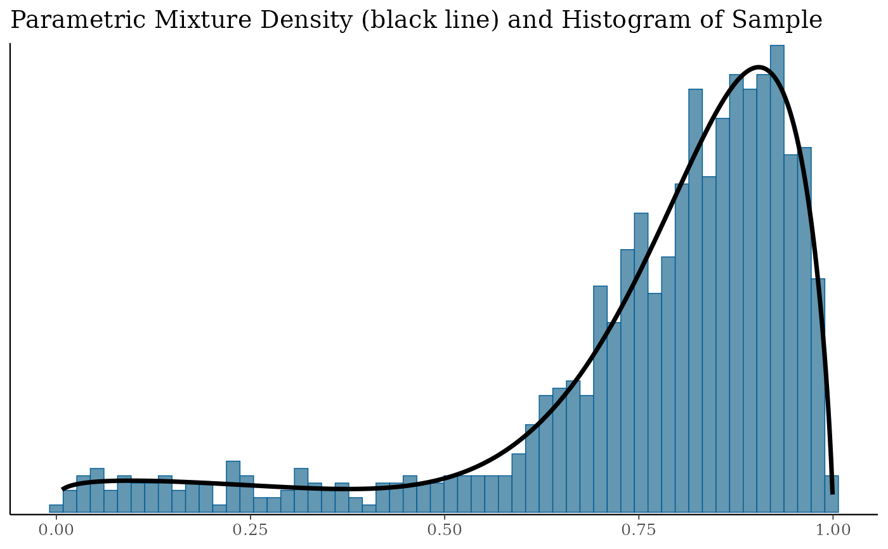
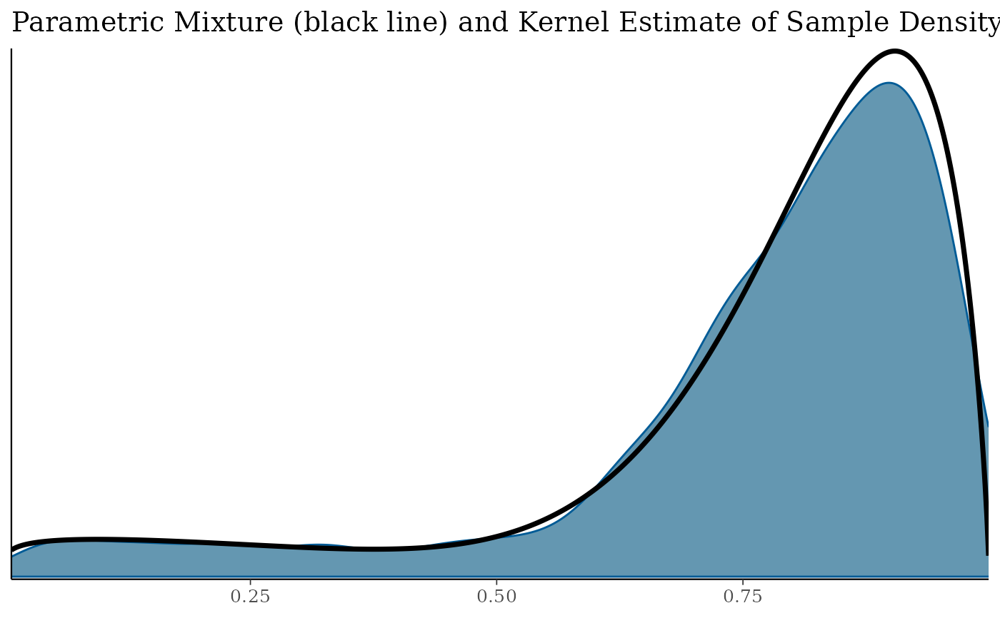
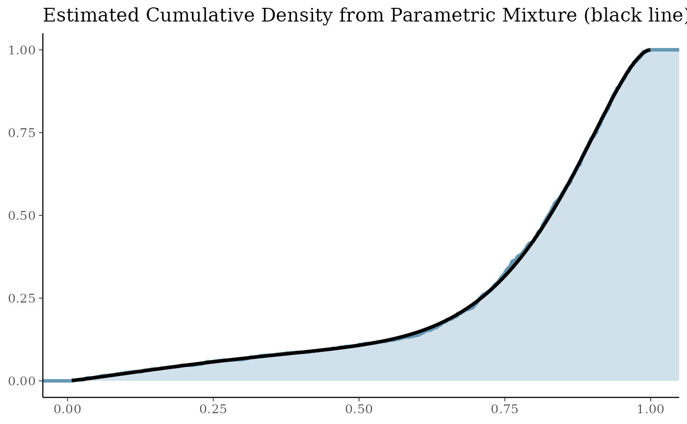

Expectation-Maximization (EM) based fitting of parametric mixture densities to numerical samples. This provides a convenient approach to approximate MCMC samples with a parametric mixture distribution.
Usage
mixfit(sample, type = c("norm", "beta", "gamma", "mvnorm"), thin, ...)
# S3 method for default
mixfit(sample, type = c("norm", "beta", "gamma", "mvnorm"), thin, ...)
# S3 method for gMAP
mixfit(sample, type, thin, ...)
# S3 method for gMAPpred
mixfit(sample, type, thin, ...)
# S3 method for array
mixfit(sample, type, thin, ...)Arguments
- sample
Sample to be fitted.
- type
Mixture density to use. Can be either norm, beta or gamma.
- thin
Thinning applied to the sample. See description for default behavior.
- ...
Parameters passed to the low-level EM fitting functions. Parameter
Ncis mandatory.
Value
A mixture object according the requested type is
returned. The object has additional information attached, i.e. the
log-likelihood can be queried and diagnostic plots can be
generated. See links below.
Details
Parameters of EM fitting functions
- Nc
Number of mixture components. Required parameter.
- mix_init
Initial mixture density. If missing (default) then a k-nearest-neighbor algorithm is used to find an initial mixture density.
- Ninit
Number of data points used for initialization. Defaults to 50.
- verbose
If set to
TRUEthe function will inform about fitting process- maxIter
Maximal number of iterations. Defaults to 500.
- tol
Defines a convergence criteria as an upper bound for the change in the log-likelihood, i.e. once the derivative (with respect to iterations) of the log-likelihood falls below
tol, the function declares convergence and stops.- eps
Must be a triplet of numbers which set the desired accuracy of the inferred parameters per mixture component. See below for a description of the parameters used during EM. EM is stopped once a running mean of the absolute difference between the last successive
Nepsestimates is below the givenepsfor all parameters. Defaults to 5E-3 for each parameter.- Neps
Number of iterations used for the running mean of parameter estimates to test for convergence. Defaults to 5.
- constrain_gt1
Logical value controlling if the Beta EM constrains all parameters a & b to be greater than 1. By default constraints are turned on (new since 1.6-0).
By default the EM convergence is declared when
the desired accuracy of the parameters has been reached over the last
Neps estimates. If tol and Neps is specified, then
whatever criterion is met first will stop the EM.
The parameters per component \(k\) used internally during fitting are for the different EM procedures:
- normal
\(logit(w_k), \mu_k, \log(\sigma_k)\)
- beta
\(logit(w_k), \log(a_k), \log(b_k)\)
- constrained beta
\(logit(w_k), \log(a_k-1), \log(b_k-1)\)
- gamma
\(logit(w_k), \log(\alpha_k), \log(\beta_k)\)
Note: Whenever no mix_init argument is given,
the EM fitting routines assume that the data vector is given in
random order. If in the unlikely event that the EM gets caught in a
local extremum, then random reordering of the data vector may
alleviate the issue.
Methods (by class)
mixfit(default): Performs an EM fit for the given sample. Thinning is applied only if thin is specified.mixfit(gMAP): Fits the default predictive distribution from a gMAP analysis. Automatically obtains the predictive distribution of the intercept only case on the response scale mixture from thegMAPobject. For the binomial case a beta mixture, for the gaussian case a normal mixture and for the Poisson case a gamma mixture will be used. In the gaussian case, the resulting normal mixture will set the reference scale to the estimated sigma ingMAPcall.mixfit(gMAPpred): Fits a mixture density for each prediction from thegMAPprediction.mixfit(array): Fits a mixture density for an MCMC sample. It is recommended to provide a thinning argument which roughly yields independent draws (i.e. useacfto identify a thinning lag with small auto-correlation). The input array is expected to have 3 dimensions which are nested as iterations, chains, and draws.
References
Dempster A.P., Laird N.M., Rubin D.B. Maximum Likelihood from Incomplete Data via the EM Algorithm. Journal of the Royal Statistical Society, Series B 1977; 39 (1): 1-38.
See also
Other EM:
plot.EM()
Examples
bmix <- mixbeta(rob=c(0.2, 1, 1), inf=c(0.8, 10, 2))
bsamp <- rmix(bmix, 1000)
bfit <- mixfit(bsamp, type="beta", Nc=2)
# diagnostic plots can easily by generated from the EM fit with
bfit.check <- plot(bfit)
names(bfit.check)
#> [1] "mixdist" "mixdens" "mixecdf" "mix"
# check convergence of parameters
bfit.check$mix

bfit.check$mixdens

bfit.check$mixecdf

# obtain the log-likelihood
logLik(bfit)
#> 'log Lik.' 543.9702 (df=5)
# or AIC
AIC(bfit)
#> [1] -1077.94